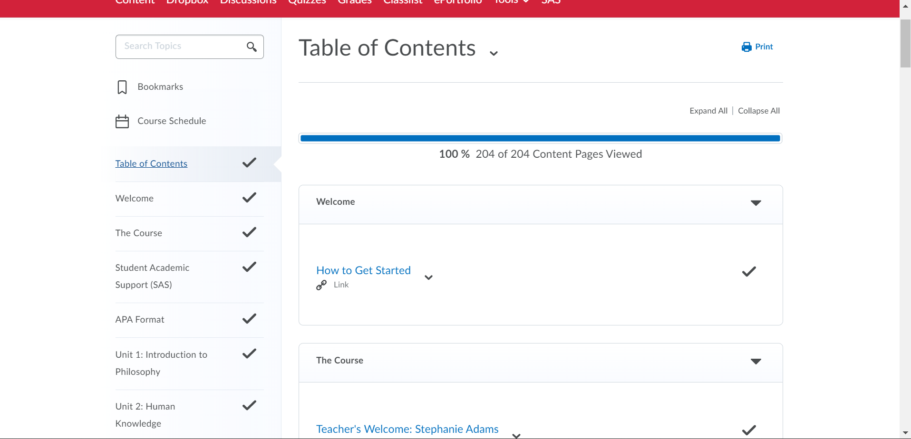
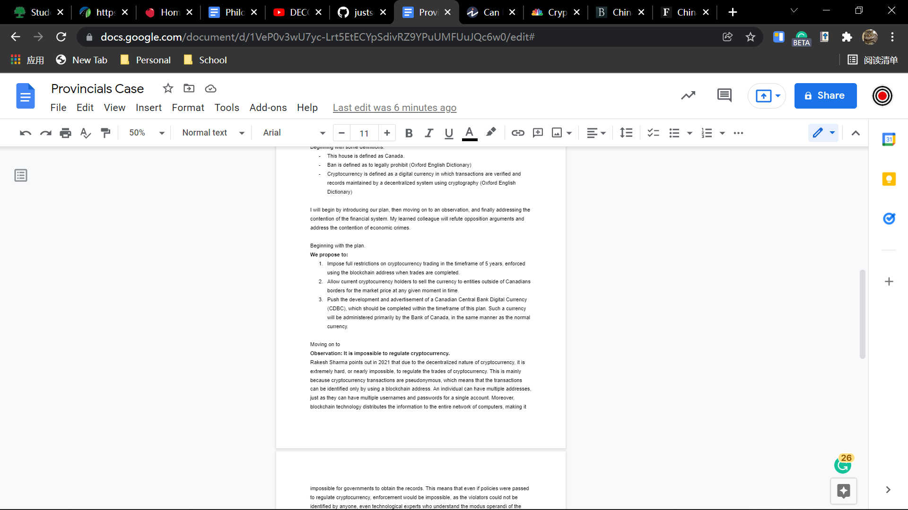
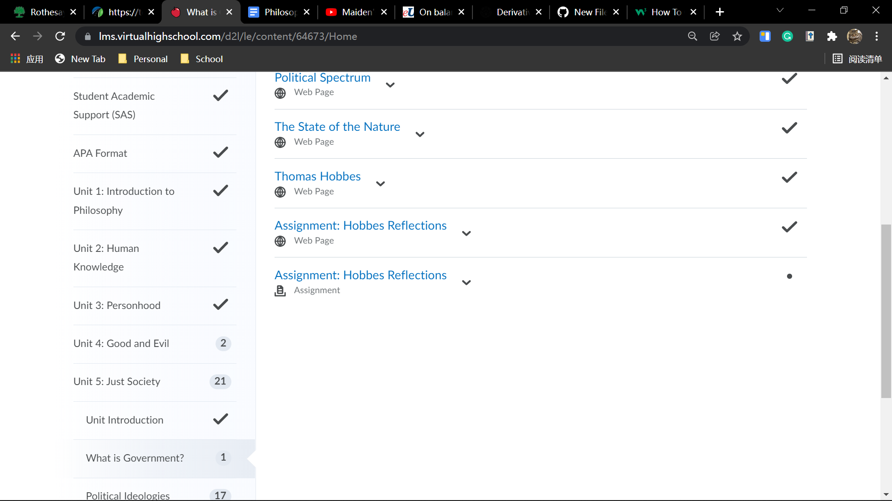

Been a while since the last entry. As per promised, there will be a picture this entry.
First of all, braces don't hurt at all anymore. Upon that, I've established a good dental habit, which would probably stay with me (hopefully) even after I remove the braces.
Secondly, participated in the National Public Speaking Championships for the first time last weekend (also why I didn't make an entry), it was pretty tiring, but also pretty educational. I realized some of my potentials and limitations, and I have a general idea as to what I should work towards.
Thirdly, a new studenet arrived in grade 10. Her name's Jessica. She poses a threat to me as she is really good in all her subjects. I would not expect for her to overtake me in the short term, however, this does pose a decent issue in grade 11 and 12. I cannot know her exact strengths until the first report, maybe she is just Beth level, or she could be as good as Leo. Either way, some level of attention is required on her.
Fourthly, I finished my philosophy course. Finally. As my report is gonna be generated in a few weeks, I would need to tell Ms. Earle what I would need to do in studies. Hopefully I could be permitted to use that time on my EE, specifically the source reading and the outline. I also need to ask Shreyas to see his outline for the EE.
Lastly, I switched from Bio to Chem in science, I got a 7 in the bio test, which means I should be good in Bio score; and I am gonna start my history essay soon. McEvoy is already letting us start to analyze our sources and make point-form notes, so I believe it shouldn't be too long before we start writing.

By the way, we are switching to online school again for 2 days due to the 9 cases in McKay. That's why I can be writing this at 11 or 12pm. We are expected to return on Tuesday, 22nd Feb. 2022.
Also VALENTINE'S DAY SUCKED. The school had a bunch of dumb activities, none of which were good. Except for Cole's performance, which was legendary.
Gotta go sleep now. That was quite a long entry.
Thursday, Feb 3, 2022
Raining
Got my braces on. Pure pain. When front teeth collide my brain just stops functioning because the amount of pain I suffer from. Currently taking Advil to avoid my brain from disfunctioning completely.
Math test tomorrow. Math class started on a new unit, trignometry but its not right angle. Sort of annoying, especially counting the fact that I can't think properly with my braces on.
Two main issues with the braces that I'm concerned about. One, when I was brushing my teeth today, a blue ring thingy fell out, and I'm not sure if its normal. Two, I feel like a wire is in the way of me biting. Everything else should be normal.
Already sent the doctor an email about the two aforementioned issues. If she doesn't respond within a day (AKA before tomorrow), I'll wait until Monday to see how things fare out and call the office if the problems persist.
Made great improvements on the website. Added a comment section and got the page separation done, albeit not in a great manner. Either way, its done. I'll work on improving some stuff later on.
Completely submitted everything in the philosophy course except for the final assessment. Should be good.
Not gonna post a photo, at least not for this entry. Maybe the next entry, yes I know its been forever since I've posted a photo.
Tomorrow is gonna be freezing rain and snow, extreme weather. And I'm supposed to go to sleep early because of the braces. Anyways, I'll end it here.
Friday, Jan 28, 2022
Snowing
Got two more teeth removed. This time it actually hurt a bit and bled more for some reason, I'm not sure. Anyways, I'm writing this entry at like 11 PM, about 10 or 11 hours after the extraction, and its mostly fine now.
Chewing is mostly unaffected as I'm already used to chewing with my right side despite the missing teeth. The pain isn't especially unbearable as well, its manageable, at least as of right now.
Oh and also apparently there is no restriction on coke or any soda drink. Never trust google.
In terms of studying, there are a couple things that I've done. Philosophy course is basically finished, just waiting on the teacher to reply to my drafts and I can start submitting them, and working on the final project which is the presentation.
There are quite a bit of other work as well. Science is really pressing because I missed the class today and I'm presenting on Tuesday. At least I get Monday off to prepare due to the long weekend.
We're going back in person next week, which is gonna be interesting. Hopefully my braces doesn't obstruct my experience too much.
I also started doing physical exercises again. Doing K4 right now, its pretty tiring honestly. I also joined a leftist group chat and we're sharing some documents. Read another 70 pager on Opening up and Reforming + The Cultural Revolution, saved it on my laptop.
About my future, I figured some stuff out. While I would give all that I have to the cause of the liberation of humanity, some parts in me also want a human life. A life which I could spend time, or in effect, waste time with my family and the ones I love. A life in which I can find someone I love and be with them forever. Such a life is at the expense of the people, I'm aware, but I still have the desire for it. The sense of happiness is simply too attractive. I guess I'm human after all.
Snowstorm tomorrow again. I'll stay home and do some work with science and English. I'll end this here and try to go to sleep.
Saturday, Jan 22, 2022
Sunny
Just got two of my teeth removed. Took about 4 or 5 hours for the effect of the freezer thats used on my teeth to completely wear off. Before it did, I couldn't even drink water properly because the muscles on my lips won't work.
Tried chewing a bread with only the left side of my mouth, felt kinda weird. I instinctively tried to move the food to the right side because that's how chewing works, but fortunately, its not as painful as I imagined it to be. Moreover, the teeth I removed are not that important to chewing, so all I need to do is just to wait for the wound to heal and everything should be fine.
There's not much pain honestly, but it is quite uncomfortable. Which hopefully doesn't constitute an issue later on.
Last week was virtual. It was pretty hectic. Some people just used it as an opportunity to play fortnite and video games (i.e. Alex Symes, Jerry Zhu), but I think I did pretty well in the sense that I wasn't behind or anything. If anything, I was ahead.
I signed up for the national public speaking tournament, however, I would already have my braces on by then. Hopefully I also have learned to speak normally with them on by then.
Oh yeah, and I'm also getting decently good at fortnite. Not sure if its a good thing or a bad thing. If anything, I'm not addicted, that's for sure. Not sure how people can get addicted to this game, its not rewarding at all.
Below are some deeply political stuff. Hover over to see it, but I suggest you not to.
Learned some more about the cultural revolution. The 保皇派 were the one who classified people based on their backgrounds, they were also those who defended the corrupted government officials. Despite this, both sides claim that their opponents are 保皇 and they are 造反. Changed my wechat username to Red Elephant in the Room 房间里的红色大象 and my pfp to a relevant one, as I believe that the major issue of the government is overlooked. But certainly, I still have more learning to do. At this point, I still know too little about the theories and the history.
Anyways, gotta go do some actual work now. Theres a ton of homework this week. I'll end this entry here.
Monday, Jan 17, 2022
Snowstorm
Another snowstorm. I don't even know why it snows so much. Gotta clear off the deck again.
Dad is painting the bathroom of both the 2nd floor and the 3rd floor, and he is, according to him, also planning on painting the handle of the stairs. Don't get why he's doing all this but I'm fine with it.
Classes went online due to new policies. It's both good and bad for me. Good in the sense that its safer, bad in the sense that the amount of info conveyed is smaller and I might get a lower grade because its harder to participate in class. Anyways, day 1 seems good, which is at least a good sign.
Didn't make an entry for provs because it was bullshit. I lost a round because my case "was too good" and got a speaker point of 10. One of my opponents spoke for 1 minute and got the same speaker point. If we won that round, we would be 2nd or even 1st. Now we lost it, and we're 8th. Can't even go to nats. Even McEvoy is pissed. RNS did get a provincial champion for the first time in 5 years though, but it might be taken away by SHERRY NOLAN.
Anyways, snowing insane outside right now. Gotta eat lunch. Guess I'll end the entry here.
Thursday, Jan 13, 2022
Sunny
Snow yesterday was crazy. Gonna snow again tomorrow, another snowstorm. Obviously, school doesn't stop.
New Brunswick will officially be in Level 3 for CoVID, or the red phase, and of course, RNS is unphased. Co-curricular might stop though.
It seems that the students in grade 12 would rather risk it than to go online (Yihong, Cindy). There's also the boarders. I have to admit that shutting down is not as easy as it sounds. Omicron is also not that much of a worry for us. However, community spread could be lethal.
Fortunately, my dad will be getting his booster in March. Hopefully I don't give him the virus before then.
Debate tournament in 2 days. I'll probably make a separate entry for that.
Monday, Jan 10, 2022
Sunny
7668 active cases until today, 122 hospitalizations, 10 on ventilators. And SOMEHOW, RNS decides to still go back in person.
Finished the debate case & went over it with Shreyas today, he can finish Gov case within 5 minutes, which is pretty good, despite he still stutters a little. We should be better at the time of the actual tournament.
People came to fix the window of the bathroom on the 3rd floor and my dad's bedroom today, it couldn't remain open. Now it can and it looks a lot better. Took about 4 hours (8:15 AM - around 12 PM).
Regarding RNS and covid again. Cole said that the reason we're going back in person could be that RNS remaining open during the pandemic was a big selling factor for some new families this year, and I think also that they need to refund us if its in-person. Nothing beats in-person school, my ass. Just pure capitalism.
Some people are coming back from Mexico, some from Toronto, some from other places. We're gonna have the biggest outbreak ever tomorrow. There's no way I go to eat lunch, despite McEvoy telling me that there will not be mandatory lunch. Not taking off my mask any time tomorrow. I'll try and find a KN95 as well so I don't have to switch it midway.
Let's see if I survive.
Saturday, Jan 8, 2022
Sunny
The snowstorm was insane, see picture below. Never seen it snow this much in my entire life. Spent like 2 hours clearing off just the back yard, back hurts like hell. Never doing it again.
Global warming is fake
That was a joke if you didn't realize. Anyways, I finished the government case for debate, and before my philosophy teacher responds to my email I won't be doing philosophy in the forseeable future. School starts soon so there's always that.
Might get on the Hypixel SMP a bit before school starts. Finish that nether railroad.
Not much happened. Had my second driving lesson, coach is feeling better and said I need to practice turning more. Finish the philosophy unit. I'm writing this at 1 AM in the morning.
The reason I'm still up at this hour is Sherry Nolan, she changed the debate resolution for provincials to something new completely. Prepping my ass off right now.
0 Ground for government case. I don't even know how she can persistently come up with new trashier resolutions. Sherry Nolan never fails to disappoint. Here's a pic of what I have so far.

Also, snowstorm tomorrow. Gonna grind my case I guess, originally planning to go practice driving at QPlex.
Sunday, Jan 2, 2022
Cloudy
Literally nothing happened today. French class happened. I made this entry to remind myself of how bad covid is. I will write the following in two languages.
Covid can and have (from the very 1st case) affect other organs than the lungs and the respiratory system. Cases have been reported where covid affected the brain. It is also possible that covid cannot be detected by any means of covid testing that exists in the present day. In fact, covid tests are only 50% accurate. All vaccines are void against the omicron variant. A woman died in LA 4 days after contracting the virus, showing 0 symptoms whatsoever and her dead body tested negative for covid, she died from a cerebral hemorrhage.
Aaaaand of course it rains today when everyone thinks the snow can finally pile up for a bit.
Went to someone else's place (海平阿姨) with some friends today for Lunch. Got really bored later because there were literally nothing to do, so I finished my daily dose of philosophy course there instead. Finally moved on to communism and socialism, the course isn't too biased.
Prepped some debate after I got home. Dinner is leftover pizza. Tried K3 for the first time in a while, got destroyed, but its possible. Next goal is K3 but with shorter breaks.
The anime yesterday really made me consider some life choices. I really miss the times when I'm younger, and I realized just how much I've been wasting my time.
First day in 2022. At least I'll have a chance to change. Life is much less desirable now when compared to 10 years or even 5 years ago, but I still have a chance to change. Gotta enjoy life as is. I bet 5 or 10 years later I'll be looking back and be envious of myself right now.
Obviously, this is not to say that my life is desirable or enjoyable. However, as things only go downhill, I might as well take what I can and keep it in my memory.
So yeah. That anime was really good btw. Its name is Erased（只有我不在的街道）, if you didn't see the third entry.
Friday, Dec 31, 2021
Cloudy
Helped my dad clean the back yard of snow this morning. Fixed some issues with the blog. Finished correcting philosophy essays. Did some further research regarding debate.
Played minecraft. Watched anime, which I will get to in a bit. Dinner was veggie pizza and meat, delicious as always.
The debate topic this time ("This House would support a ban on cryptocurrency") is sort of hard to prep for. I have no idea what crypto is, but now I generally have something along the lines of a case. Talking to Shreyas, my partner, on Sunday.
Regarding the anime, it's called Erased（只有我不在的街道）, recommended by Umar. It was really good. Finished it in an afternoon, about 12 episodes. The plot was near perfect.
Happy new year! Next year I'll be someone else. I will work harder. I will push myself harder. Most importantly, I'll be a better person. Those are my resolutions.
Oh and also, I feel like I can start doing the K3 from the Keep App tomorrow in temrs of physical exercise.
Thursday, Dec 30, 2021
Cloudy
Sleepy as heck, tried for an afternoon to add pages to this website and failed. Formatting error. Guess I'll use collapse instead for now.
Did some more philosophy work and carried on with my daily routine. All should be good. Driving class got cancelled because teacher was sick. Hopefully its not CoVID.
Wednesday, Dec 29, 2021
Cloudy

Hopefully the blog gives me someone to talk to.
Finished some stuff in my philosophy course. Carried on my daily routine.
Dinner was delicious. Ate some Chinese dessert, maybe I need to work out more.
Finished the book Mao's Great Famine. Have a few opinions on it that I need to tell McEvoy.
Expecting to finish the current unit of the philosophy course during the winter break.
Oh and HTML compiles top to bottom, doesn't read the entire script beforehand. Got stuck on the header issue for like 1 hour because of this.
About Me
Random student. Chinese. Speaks Mandarin, English, French.
Communist. Studies in Canada currently (as of 2022).
Might stop updating the blog someday. Might update it forever. Who knows.